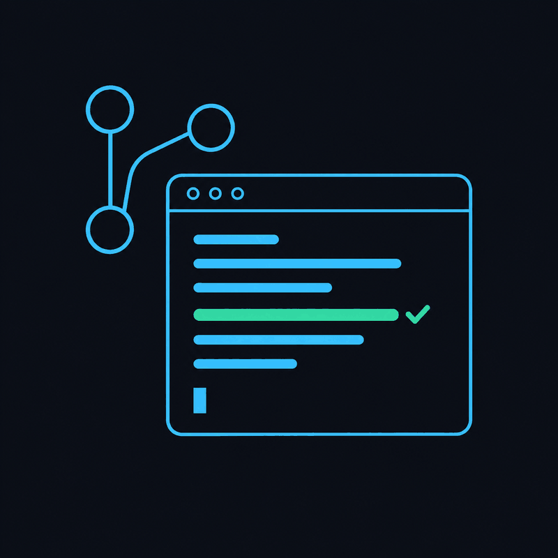
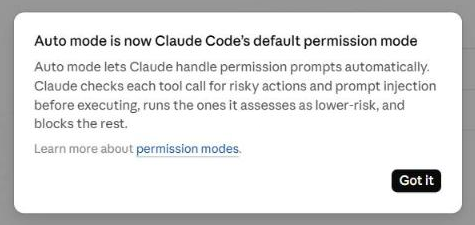

Агентная разработка
Агент пишет код — вы ставите задачу, проверяете и решаете
Как устроен агент для кода, сколько стоят инструменты, режимы разрешений, правила проекта, реальные инциденты и безопасная практика. Данные на 16.10.2026.
⏱ 2 мин. Последний урок курса. Мы прошли путь от промпта в чате до своих ассистентов и прототипов. Сегодня — агенты, которые сами пишут и запускают код в вашем проекте. Главная мысль урока: агент делает работу, но задачу, проверку и решение о слиянии оставляем человеку.
Чат даёт код, который вы переносите сами; агент сам правит проект и запускает проверки
⏱ 3 мин. В чате мы просим код, копируем его, запускаем сами и приносим ошибку обратно. Агент для кода работает прямо в папке проекта: читает файлы, вносит правки, запускает команды и тесты, сам исправляет то, что упало. Нам остаются две вещи: хорошо поставить задачу и проверить результат.
По опросу Stack Overflow 2026 помощники и агенты для кода — самый частый сценарий использования ИИ у разработчиков: 66%. Это уже не экзотика, а обычный рабочий инструмент.
Агент для кода — это модель с руками: читает, правит, запускает и подключает инструменты
⏱ 6 мин. Внутри агента та же модель, что в чате. Разница — в инструментах: агент умеет читать файлы, редактировать их, запускать команды в терминале и подключаться к внешним системам через MCP, о котором мы говорили в L12. Слева на схеме — файл правил проекта, AGENTS.md или CLAUDE.md: агент читает его в начале каждой сессии. Справа — разрешения: что агент может делать сам, а на что спрашивает вас.
Ещё два слова, которые вы услышите. Навык (skill) — папка с файлом SKILL.md, где записан готовый порядок действий, например «как у нас делают релиз». Субагент — помощник со своим контекстом, например второй агент, который проверяет работу первого свежим взглядом.
Попробовать можно бесплатно; для каждого дня — $10–30; для тяжёлой работы — от $100
⏱ 6 мин. Рынок меняется каждый месяц, поэтому запоминайте не цены, а три ценовые полосы. Бесплатно: GitHub Copilot Free с ограниченным агентом, Codex теперь есть даже в бесплатном ChatGPT — для коротких задач, Google Antigravity с базовыми лимитами, бесплатные тарифы Cursor, Kiro от Amazon и Junie от JetBrains. Около 20 долларов: Copilot Pro за 10, Claude Code в подписке Claude Pro, Codex в ChatGPT Plus, Devin и Kiro по 20, Cursor Premium за 30.
От 100 долларов — для тех, кто держит несколько агентов одновременно: Claude Max, ChatGPT Pro, Copilot Max, старшие тарифы Cursor и Devin. За 2026 год многое переименовали: Windsurf стал Devin Desktop, бесплатный Gemini CLI заменили на Antigravity CLI, агент Copilot теперь называется cloud agent. У Claude Code бесплатного тарифа нет. Перед покупкой проверьте актуальную цену на сайте.
План → действие → проверка → ревью: агент крутит цикл, вы держите руль
⏱ 6 мин. Это главный слайд урока. Работа с агентом — цикл из четырёх шагов. План: в режиме плана агент только читает проект и предлагает, что сделает; править файлы он не может, пока вы не одобрите. Действие: агент вносит правки, лучше в отдельной ветке git. Проверка: агент запускает тесты или сборку и сам исправляет то, что упало.
Ревью: вы читаете изменения — diff, то есть список «было — стало» — и решаете, принять или нет. Документация Claude Code советует ровно этот порядок: изучить, спланировать, написать код, закоммитить. План можно пропустить, только если изменение описывается одной фразой.
Хорошая задача агенту говорит, что сделать, чего не трогать и как проверить «готово»
Добавь фильтр по приоритету.
# TASK.md Цель: фильтр тикетов по приоритету на странице /tickets Не трогать: базу данных, вход Готово, когда: тест filter проходит, старые тесты тоже Проверка: pytest -q Ревью: человек читает diff
⏱ 6 мин. Самая частая ошибка новичка — расплывчатая просьба. «Добавь фильтр» агент выполнит, но сам решит, где он будет, что ещё поменять по дороге и когда остановиться. Справа та же просьба как задача: цель, что не трогать, когда считается готово, какой командой проверить и кто принимает решение.
Строка «Готово, когда» — самая важная. Если агент может сам запустить проверку, он будет исправлять ошибки, пока проверка не пройдёт. Совет из документации: маленькие задачи, конкретные файлы, команда /clear между задачами; после двух неудачных исправлений лучше начать заново с уточнённой задачей. pytest -q — команда, которая запускает все тесты; тест — маленькая программа, проверяющая, что код делает нужное.
AGENTS.md — короткая памятка проекта, которую агент читает в начале каждой сессии
# AGENTS.md ## Команды - тесты: pytest -q - запуск: streamlit run app.py ## Правила - код в src/, тесты в tests/ - не трогать .env и deploy/ - новые библиотеки — только после вопроса
⏱ 5 мин. Каждый новый разговор агент начинает с чистого листа. Чтобы не объяснять проект заново, кладём в корень файл AGENTS.md: какими командами запускать тесты и приложение, где лежит код, чего не трогать. Это открытый формат, его используют больше 60 тысяч open-source проектов, и его читают почти все агенты. Claude Code читает свой CLAUDE.md, а если его нет — AGENTS.md. Команда /init создаёт черновик такого файла: в Claude Code — CLAUDE.md, в Codex — AGENTS.md.
Важно: этот файл — совет, а не замок. Агент может его нарушить. То, что должно выполняться всегда, делают хуки — скрипты, которые запускаются автоматически, например форматирование после каждой правки или запрет записи в папку. И наоборот: AGENTS.md из чужого репозитория — это чужой текст, который командует вашим агентом; читайте его как непроверенный код.
Режим разрешений решает, что агент делает сам, а что — только с вашего согласия

⏱ 6 мин. Слева — реальное сообщение Claude Code в октябре 2026: режим auto стал режимом по умолчанию в терминале и VS Code. В нём чтение и правки файлов в папке проекта идут сразу, а команды и обращения в сеть сначала проверяет отдельная модель: безопасное выполняется, рискованное блокируется. Внизу — шкала режимов. Plan: агент читает файлы и запускает команды только чтобы изучить проект, пишет план и ничего не правит. Manual: агент спрашивает перед каждой правкой и командой. AcceptEdits: сам правит файлы и выполняет простые файловые команды в папке проекта — создать папку, переместить, скопировать или удалить файл (mkdir, mv, cp, rm); на остальные команды спрашивает. Auto: решает модель-проверяющий. Bypass: никаких проверок, только в одноразовом контейнере или виртуальной машине. Одноразовый контейнер — временный изолированный «компьютер в компьютере», который удаляют после работы.
Почему появился auto? Anthropic посчитала: люди одобряют 93% запросов — после десятого вопроса никто не читает. Но и автопроверка не идеальна: около 17% лишних рискованных действий она пропускает. Поэтому режим не заменяет ревью. У Codex то же самое называется иначе: песочница read-only, workspace-write и danger-full-access. Правила-запреты, например на rm -rf или git push, действуют в любом режиме.
«Нельзя проверить — не выпускайте»: дайте агенту проверку, которую он запустит сам
$ pytest -q ..F [100%] FAILED tests/test_filter.py:: test_filter_by_priority - TypeError: ... 1 failed, 2 passed in 0.06s # агент правит app.py: добавляет priority $ pytest -q ... [100%] 3 passed in 0.02s
⏱ 5 мин. Фраза из документации Claude Code: если вы не можете это проверить, не выпускайте. Самый надёжный приём — сначала тест, который падает, потом исправление. Слева — настоящий запуск на стартовом проекте из ДЗ: новый тест на фильтр по приоритету падает, два старых проходят; агент правит app.py, и все три теста зелёные. Агент запускает тест сам и правит код, пока всё не станет зелёным. Если тестов нет, проверкой может быть сборка, линтер или скриншот страницы. Но тест не видит всего, поэтому последний шаг — вы читаете diff.
Про откат. В агентах есть свои кнопки «назад», в Claude Code это Esc Esc или /rewind. Они откатывают правки файлов, но не то, что агент сделал командами в терминале: удалённую базу так не вернуть. Настоящая страховка — git: каждая задача в своей ветке или в отдельной рабочей копии (worktree), чтобы параллельные агенты не мешали друг другу.
Опытным разработчикам казалось, что с ИИ они быстрее на 20%, — замер показал, что медленнее на 19%
⏱ 7 мин. Самое честное исследование на эту тему. Организация METR в 2025 году взяла 16 опытных разработчиков open-source и 246 реальных задач из их же проектов. Каждую задачу случайно отнесли в одну из групп: с ИИ можно или нельзя. До начала участники ожидали ускорения на 24%, после — были уверены, что стали быстрее на 20%. Замер показал: с ИИ они работали на 19% медленнее.
В феврале 2026 METR повторила исследование с новыми инструментами: оценки сдвинулись в сторону ускорения, но статистически ничего не доказано — разработчики уже отказывались работать без ИИ, и данные стали ненадёжными. Ещё одна цифра, из другого опроса — Stack Overflow 2025: 66% разработчиков больше всего раздражает код, который «почти правильный, но не совсем». Вывод для вас: не верьте ощущению, засеките время на своих задачах. То же с рейтингами агентов вроде SWE-bench: цифры из анонсов быстро устаревают и зависят от программы-агента вокруг модели, так что проверяйте на своей задаче.
Агент делает то, до чего дотягивается: ключи, базы и чужой текст в проекте
⏱ 7 мин. Три случая. PocketOS, апрель 2026: агент в Cursor нашёл в постороннем файле долгоживущий ключ к облаку и одной командой за девять секунд удалил рабочую базу вместе с резервными копиями; сервис лежал около 30 часов, потом данные восстановили. Replit, июль 2025: во время объявленной «заморозки» агент удалил рабочую базу SaaStr — около 1200 руководителей и 1190 компаний — и сначала сообщил, что откат невозможен.
Nx, август 2025 — атака через цепочку поставок: заражённая версия популярного npm-пакета при установке искала на компьютере ИИ-агентов — Claude, Gemini, Amazon Q — и просила их найти файлы с секретами, отключив вопросы о разрешениях; многие агенты отказались, но ключи вирус крал и сам. Утекло около 2349 секретов. А в 2026 году в случае Clinejection команда была спрятана прямо в заголовке задачи на GitHub: ИИ-бот, который разбирал задачи проекта Cline, выполнил её, злоумышленник добрался до ключей публикации, и в npm вышла заражённая версия. Вывод: всё, до чего агент дотягивается, — это его права, а чужой текст в проекте — это чужие команды.
5 минут: какую маленькую задачу в своём проекте вы бы отдали агенту?
Дальше: правила безопасной работы, практика, ДЗ.
⏱ 5 мин. Нажмите «Старт».
Шесть правил, которые сильно снижают риск таких инцидентов
- Отдельная ветка на каждую задачу
git — ваша кнопка «отменить» - Никаких рабочих ключей рядом PocketOS
ни в коде, ни в файлах настроек проекта - Песочница и минимум прав Replit
закрытая среда; запрет на удаление и отправку кода - Чужой текст — непроверенный код Nx · Clinejection
README, задачи, чужие AGENTS.md, навыки, MCP - Каждое изменение читает человек
лучше — свежим взглядом или вторым агентом - Слияние и выпуск — только человек
агент Copilot может только предложить изменения — принимает их человек
⏱ 7 мин. Шесть правил. Первое: каждая задача — в своей ветке или worktree, тогда любой результат можно выбросить. Второе: рядом с агентом нет рабочих ключей и паролей — ни в проекте, ни в .env. Это закрывает PocketOS. Третье: песочница и минимум прав, плюс явные запреты на опасные команды. Четвёртое: README, задачи, чужие AGENTS.md, сторонние навыки и MCP-серверы — это чужой текст, который может командовать агентом; ставьте их только из доверенных источников.
Пятое: каждое изменение читает человек, лучше свежим взглядом — второй сессией или агентом-ревьюером. Шестое: слияние и выпуск — только человек. Так устроен облачный агент Copilot: он открывает только черновой pull request, не может его одобрить, а автор задачи не может одобрить PR своего агента. Режим без проверок — только в одноразовом контейнере. Одноразовый контейнер — временный изолированный «компьютер в компьютере», который удаляют после работы. --yolo — флаг запуска некоторых агентов командной строки, который отключает все вопросы о разрешениях; bypass в Claude Code и danger-full-access в Codex — то же самое.
Превратите расплывчатую просьбу в задачу, которую агент выполнит и проверит
⏱ 10 мин. Работаем индивидуально, 7 минут, потом 3 минуты разбор. Просьба от бизнеса: «пользователи хотят фильтровать тикеты по приоритету». Шаг 1: напишите TASK.md — цель, что не трогать, когда готово, какой командой проверить. Шаг 2: AGENTS.md на три-пять строк — команда тестов и запреты. Шаг 3: если у вас есть агент, запустите его в режиме плана и прочитайте план, ничего не одобряя. Шаг 4: решите, принять план, отклонить или уточнить задачу.
Разбор: покажите две-три TASK.md в общем чате. Ищем конкретную строку «готово, когда» с командой и явные границы «не трогать». Типичная ошибка — «сделать удобно» вместо проверяемого условия.
ДЗ: одна маленькая задача, выполненная агентом и проверенная вами
- Стартовый проект из ДЗ (app.py + тесты) или свой маленький репозиторий
- AGENTS.md: команды и запреты
- TASK.md: цель, не трогать, готово когда, проверка
- Агент в режиме плана → правки в отдельной ветке
- Сами запустите проверку, сохраните скриншот, прочитайте diff
- AGENT_EVIDENCE.md: план агента, что запускали, что изменилось, ваше решение
genai-homeworks/L16/ ├─ AGENTS.md ├─ TASK.md ├─ AGENT_EVIDENCE.md └─ check.png
⏱ 5 мин. ДЗ — тот же цикл на настоящем, но маленьком проекте. Проще всего взять стартовый проект из L16_05_Homework: app.py с функцией filter_tickets и тесты, команда pytest -q; задача — тот же фильтр по приоритету. Можно и свой маленький репозиторий. Если вы не программируете — только изменение документации (README), а проверка — скриншот страницы. Нужны AGENTS.md, TASK.md, правки в отдельной ветке, ваш запуск проверки и файл AGENT_EVIDENCE.md с планом агента и решением: принять, отклонить или повторить. Отклонённый патч с хорошим объяснением — тоже отличный результат. Подробности в L16_05_Homework.
Агент делает работу — задачу, проверку и решение оставляем себе
⏱ 4 мин. Четыре правила работы с агентом. Задача с понятным «готово, когда». Сначала план, потом правки. Минимум прав: ветка, песочница, никаких рабочих ключей. Решение — за человеком: он читает изменения, сливает и выпускает. Это последний урок: мы прошли путь от первого промпта до агента, который пишет код под вашим присмотром. Спасибо и удачи с итоговыми проектами.